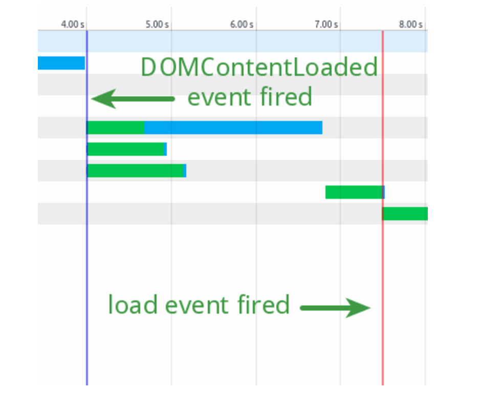

Brown bag by John Olmstead @trizic .com
“The early bird gets the worm, but the second mouse gets the cheese.”― Willie Nelson
The load event is fired when a resource and its dependent resources have finished loading.
function doLoad() {
alert( "The load event is executing" );
}
if ( window.addEventListener ) {
window.addEventListener( "load", doLoad, false );
} else if ( window.attachEvent ) {
window.attachEvent( "onload", doLoad );
} else if ( window.onLoad ) {
window.onload = doLoad;
}
Fired when the initial HTML document has been completely loaded and parsed, without waiting for other resources.
In most cases, the script can be run as soon as the DOM hierarchy has been fully constructed
webplatform.org/wiki/dom/Event/DOMContentLoadedExecute a function when the DOM is fully loaded..
$( document ).ready( handler )
$().ready( handler ) (this is not recommended)
$( handler )
Is DOMContentLoaded event EXACTLY the same as jQuery's .ready() function?
var _gaq = _gaq || [];
_gaq.push(['_setAccount', 'UA-XXXXX-X']);
Put at bottom of page: analytics, page pings.
Use a queue/buffer while rendering on the server or inline.